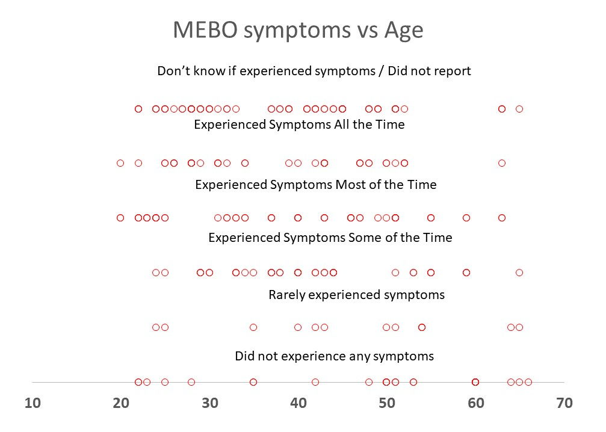
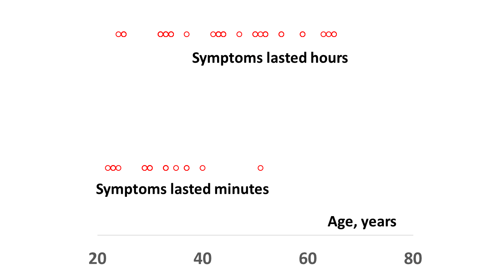

Confounding is a distortion of the association between an exposure and an outcome that occurs when participants of the study differ with respect to other factors that influence the outcome. This bias is not introduced by the investigator, laboratory or by the subjects, and it can be adjusted for in the analysis afterwards.
MEBO is a complex condition and while some of the cases seem simpler, non-linear analysis approaches are better equipped to handle the task. And this creates new challenges regarding the existence of confounding factors.
 What are there potential confounding factors that could distort the true relationship between microbes identified in this study and the risk of MEBO symptom flareups?
What are there potential confounding factors that could distort the true relationship between microbes identified in this study and the risk of MEBO symptom flareups?Age is one of the most studied confounding variables.

{kind=link}
It is known that aging changes the smell of a person - mostly because aging-related altered forms of enzymes produce 2-nonenal from diet-dependent sweat-secreted omega-7 fatty acids. 2-nonenal is detectable only in people over 40. Mean age in our study and control populations is about 40 and it is slightly different for males and females (see baseline demographic table) but the difference is not significant enough to

{kind=link}
Univariate Statistical Analysis Correlations with age and other covariates were assessed with the Spearman rank correlation test. The p-values were adjusted for multiple comparison by controlling the false discovery rate (proportion of false positives among the microbes or other variables called significant) at a 5% threshold.
We found that age did not correlate with the severity of symptoms (shown in the figure above, on the left), how far away the odor can be detected and with most other variables reported in the Quality of Life Questionnaire. We did observe interesting correlations with the length of the symptoms though (at 2% significance) - as older subjects reported that the odor lingered longer (figure on the right).
We also found several microbial species strongly correlating with age - but this was in line with previously reported results. One bacteria previously found to correlate with BMI, also correlated with age and weight in our study. These findings served for quality control in our study. In addition, we used them to correct classifier bias and to confirm that our major findings, some reported previously, were not biased.
REFERENCES
Benjamini Y, Hochberg Y. Controlling the false discovery rate: a practical and powerful approach to multiple testing. Journal of the Royal statistical society: series B (Methodological). 1995 Jan;57(1):289-300.
Thévenot EA, Roux A, Xu Y, Ezan E, Junot C. Analysis of the human adult urinary metabolome variations with age, body mass index, and gender by implementing a comprehensive workflow for univariate and OPLS statistical analyses. Journal of proteome research. 2015 Jul 2;14(8):3322-35.